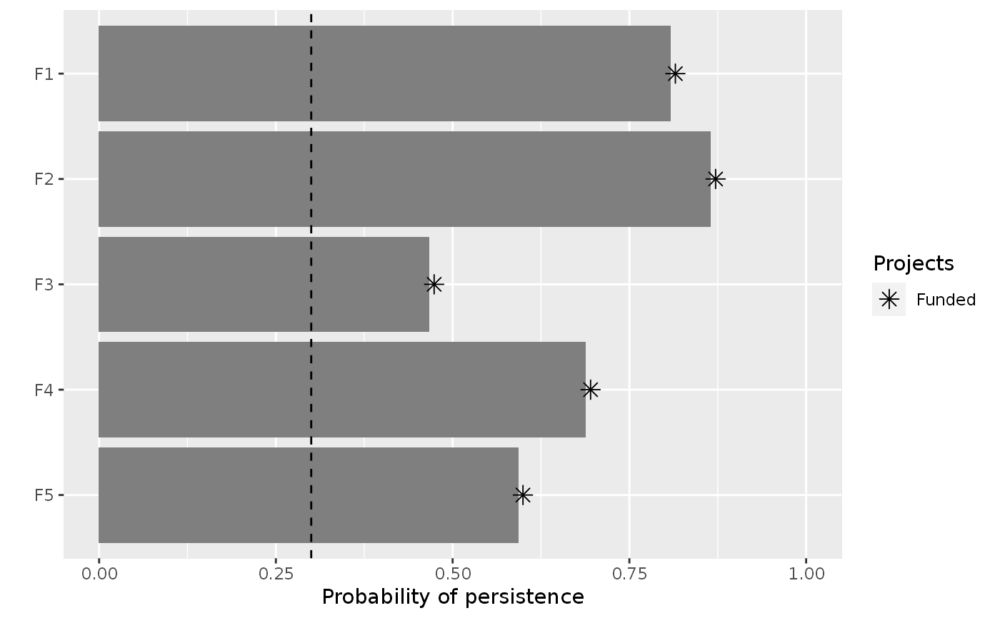

Set the objective of a project prioritization problem() to
minimize the cost of the solution whilst ensuring that all targets are met.
This objective is conceptually similar to that used in Marxan
(Ball, Possingham & Watts 2009).
add_min_set_objective(x)ProjectProblem object.
ProjectProblem object with the objective added to it.
A problem objective is used to specify the overall goal of the project prioritization problem. Here, the minimum set objective seeks to find the set of actions that minimizes the overall cost of the prioritization, while ensuring that the funded projects meet a set of persistence targets for the conservation features (e.g. populations, species, ecosystems). Let \(I\) represent the set of conservation actions (indexed by \(i\)). Let \(C_i\) denote the cost for funding action \(i\). Also, let \(F\) represent each feature (indexed by \(f\)), \(T_f\) represent the persistence target for feature \(f\), and \(E_f\) denote the probability that each feature will go extinct given the funded conservation projects.
To guide the prioritization, the conservation actions are organized into
conservation projects. Let \(J\) denote the set of conservation projects
(indexed by \(j\)), and let \(A_{ij}\) denote which actions
\(i \in I\) comprise each conservation project
\(j \in J\) using zeros and ones. Next, let \(P_j\) represent
the probability of project \(j\) being successful if it is funded. Also,
let \(B_{fj}\) denote the enhanced probability that each feature
\(f \in F\) associated with the project \(j \in J\)
will persist if all of the actions that comprise project \(j\) are funded
and that project is allocated to feature \(f\).
For convenience,
let \(Q_{fj}\) denote the actual probability that each
\(f \in F\) associated with the project \(j \in J\)
is expected to persist if the project is funded. If the argument
to adjust_for_baseline in the problem function was set to
TRUE, and this is the default behavior, then
\(Q_{fj} = (P_{j} \times B_{fj}) + \bigg(\big(1 - (P_{j} B_{fj})\big)
\times (P_{n} \times B_{fn})\bigg)\), where n corresponds to the
baseline "do nothing" project. This means that the probability
of a feature persisting if a project is allocated to a feature
depends on (i) the probability of the project succeeding, (ii) the
probability of the feature persisting if the project does not fail,
and (iii) the probability of the feature persisting even if the project
fails. Otherwise, if the argument is set to FALSE, then
\(Q_{fj} = P_{j} \times B_{fj}\).
The binary control variables \(X_i\) in this problem indicate whether each project \(i \in I\) is funded or not. The decision variables in this problem are the \(Y_{j}\), \(Z_{fj}\), and \(E_f\) variables. Specifically, the binary \(Y_{j}\) variables indicate if project \(j\) is funded or not based on which actions are funded; the binary \(Z_{fj}\) variables indicate if project \(j\) is used to manage feature \(f\) or not; and the semi-continuous \(E_f\) variables denote the probability that feature \(f\) will go extinct.
Now that we have defined all the data and variables, we can formulate the problem. For convenience, let the symbol used to denote each set also represent its cardinality (e.g. if there are ten features, let \(F\) represent the set of ten features and also the number ten).
$$ \mathrm{Minimize} \space \sum_{i = 0}^{I} C_i X_i \space \mathrm{(eqn \space 1a)} \\ \mathrm{Subject \space to} \space \\ (1 - E_f) \geq T_f \space \forall f \in F \space \mathrm{(eqn \space 1b)} \\ E_f = 1 - \sum_{j = 0}^{J} Z_{fj} Q_{fj} \space \forall \space f \in F \space \mathrm{(eqn \space 1c)} \\ Z_{fj} \leq Y_{j} \space \forall \space j \in J \space \mathrm{(eqn \space 1d)} \\ \sum_{j = 0}^{J} Z_{fj} \times \mathrm{ceil}(Q_{fj}) = 1 \space \forall \space f \in F \space \mathrm{(eqn \space 1e)} \\ A_{ij} Y_{j} \leq X_{i} \space \forall \space i \in I, j \in J \space \mathrm{(eqn \space 1f)} \\ E_{f} \geq 0, E_{f} \leq 1 \space \forall \space b \in B \space \mathrm{(eqn \space 1g)} \\ X_{i}, Y_{j}, Z_{fj} \in [0, 1] \space \forall \space i \in I, j \in J, f \in F \space \mathrm{(eqn \space 1h)} $$
The objective (eqn 1a) is to minimize the cost of the funded actions. Constraints (eqn 1b) ensure that the persistence targets are met. Constraints (eqn 1c) calculate the probability that each feature will go extinct according to their allocated project. Constraints (eqn 1d) ensure that feature can only be allocated to projects that have all of their actions funded. Constraints (eqn 1e) state that each feature can only be allocated to a single project. Constraints (eqn 1f) ensure that a project cannot be funded unless all of its actions are funded. Constraints (eqns 1g) ensure that the probability variables (\(E_f\)) are bounded between zero and one. Constraints (eqns 1h) ensure that the action funding (\(X_i\)), project funding (\(Y_j\)), and project allocation (\(Z_{fj}\)) variables are binary.
Ball IR, Possingham HP & Watts M (2009) Marxan and relatives: software for spatial conservation prioritisation. Spatial conservation prioritisation: Quantitative methods and computational tools, 185-195.
# load the ggplot2 R package to customize plot
library(ggplot2)
# load data
data(sim_projects, sim_features, sim_actions)
# build problem with minimum set objective and targets that require each
# feature to have a 30% chance of persisting into the future
p <- problem(sim_projects, sim_actions, sim_features,
"name", "success", "name", "cost", "name") %>%
add_min_set_objective() %>%
add_absolute_targets(0.3) %>%
add_binary_decisions()
# \dontrun{
# solve problem
s <- solve(p)
#> Set parameter Username
#> Set parameter TimeLimit to value 2147483647
#> Set parameter MIPGap to value 0
#> Set parameter NumericFocus to value 3
#> Set parameter Presolve to value 2
#> Set parameter Threads to value 1
#> Set parameter PoolSolutions to value 1
#> Set parameter PoolSearchMode to value 2
#> Academic license - for non-commercial use only - expires 2025-04-21
#> Gurobi Optimizer version 11.0.2 build v11.0.2rc0 (linux64 - "Ubuntu 22.04.4 LTS")
#>
#> CPU model: 11th Gen Intel(R) Core(TM) i7-1185G7 @ 3.00GHz, instruction set [SSE2|AVX|AVX2|AVX512]
#> Thread count: 4 physical cores, 8 logical processors, using up to 1 threads
#>
#> Optimize a model with 46 rows, 42 columns and 92 nonzeros
#> Model fingerprint: 0xde05e947
#> Variable types: 0 continuous, 42 integer (42 binary)
#> Coefficient statistics:
#> Matrix range [9e-02, 1e+00]
#> Objective range [9e+01, 1e+02]
#> Bounds range [1e+00, 1e+00]
#> RHS range [3e-01, 1e+00]
#> Found heuristic solution: objective 497.7671458
#> Presolve removed 45 rows and 20 columns
#> Presolve time: 0.00s
#> Presolved: 1 rows, 22 columns, 2 nonzeros
#> Variable types: 0 continuous, 22 integer (22 binary)
#>
#> Explored 0 nodes (0 simplex iterations) in 0.00 seconds (0.00 work units)
#> Thread count was 1 (of 8 available processors)
#>
#> Solution count 1: 497.767
#> No other solutions better than 497.767
#>
#> Optimal solution found (tolerance 0.00e+00)
#> Best objective 4.977671458279e+02, best bound 4.977671458279e+02, gap 0.0000%
# print solution
print(s)
#> # A tibble: 1 × 21
#> solution status obj cost F1_action F2_action F3_action F4_action F5_action
#> <int> <chr> <dbl> <dbl> <dbl> <dbl> <dbl> <dbl> <dbl>
#> 1 1 OPTIMAL 498. 498. 1 1 1 1 1
#> # ℹ 12 more variables: baseline_action <dbl>, F1_project <dbl>,
#> # F2_project <dbl>, F3_project <dbl>, F4_project <dbl>, F5_project <dbl>,
#> # baseline_project <dbl>, F1 <dbl>, F2 <dbl>, F3 <dbl>, F4 <dbl>, F5 <dbl>
# plot solution, and add a dashed line to indicate the feature targets
plot(p, s) +
geom_hline(yintercept = 0.3, linetype = "dashed")

# }